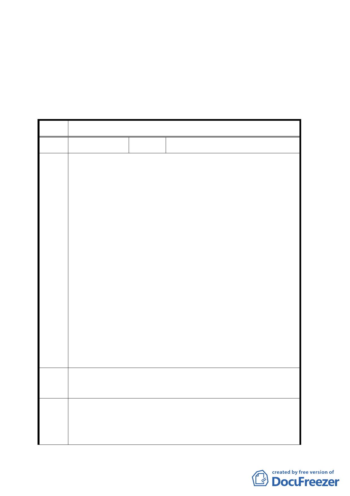

排擠。
四、 公民或團體陳情意見決議情形詳如綜理表。
臺北市都市計畫委員會公民或團體所提意見綜理表
案 名 變更台北市文山區貓空纜車路線用地主要計畫暨細部計畫案
編號
１
陳情人 指南宮管理委員會（張國清）
1. 貓空纜車場站經過指南宮部份（交通用地二，2595 平方公
尺），將風景區變更為交通用地並辦理徵收，對本宮既設之
龐大蓄水庫及預定建築用地影響甚大。
2. 配合本宮整體規劃宗教、文化、觀光、環保之願景。
93.11.26 補充
1. 本纜車系統場站用地之選定與設計，對指南宮之發展至關重
陳 情 要，故必須將交通動線、公共設施、環保衛生及營運空間做
理 由 整體規劃，成為各項設計之依據。
2. 指南宮構想在本區域中設置多媒體簡介創意館、宗教文化交
流展示館、仙夢禪道館、國際會議廳及附屬之公共設備（電
訊、公廁、公告看板等）並預留廣場用地以分散人群。
3. 指南宮三段 157 巷之 6 米道路，為本站唯一之聯外道路，亦
為連接本宮將來以風景區申請建築基地之重要道路，對將來
申請建照具關鍵性，應予保留。
建 議 1. 建請將該場站移向南側 40 公尺。
辦 法 2. 勿採行徵收方式，建議以地主提供土地共同聯合開發。
1. 依規劃單位提案同意向東南側移，調整場站位置，並留設必
專案小
要道路。
組結論
2. 本案不適採聯合開發方式辦理，所提意見歉難採納。
一○